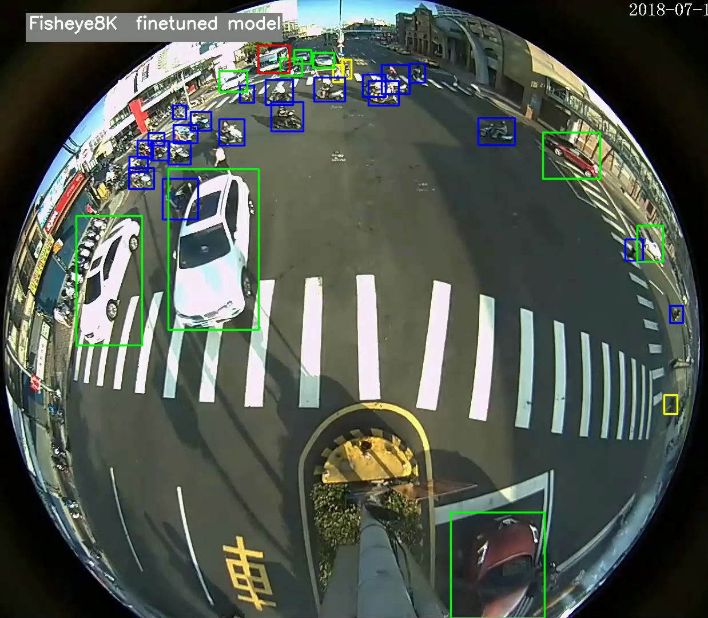
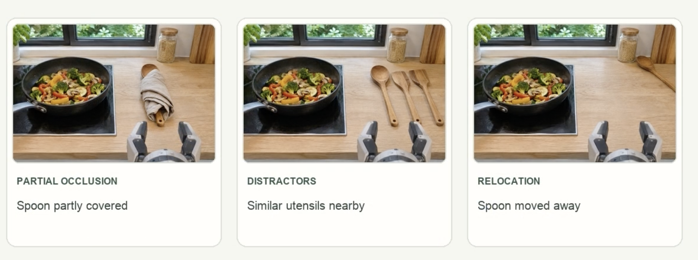
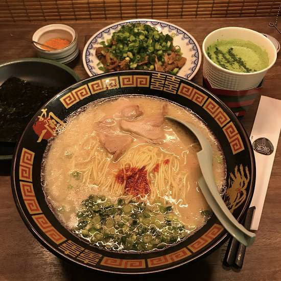
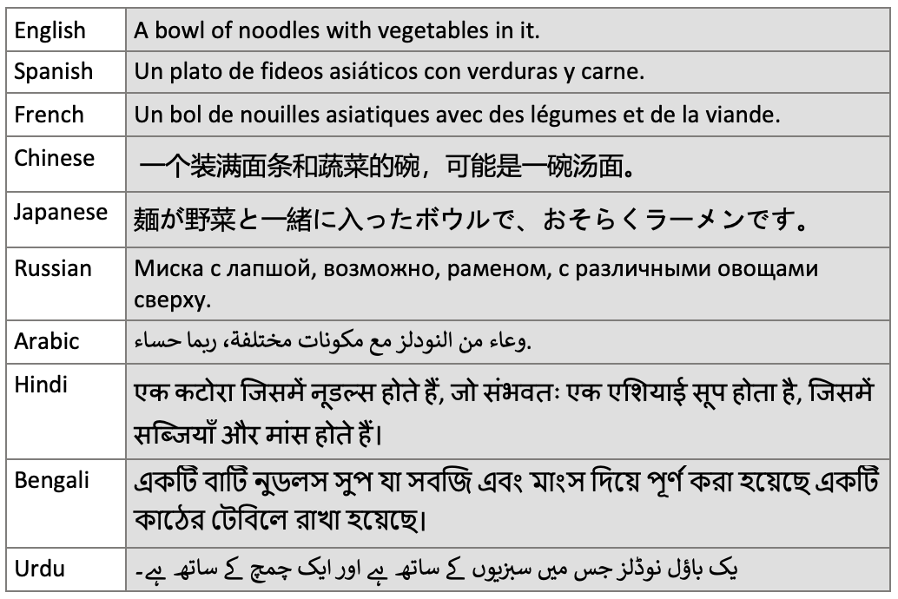
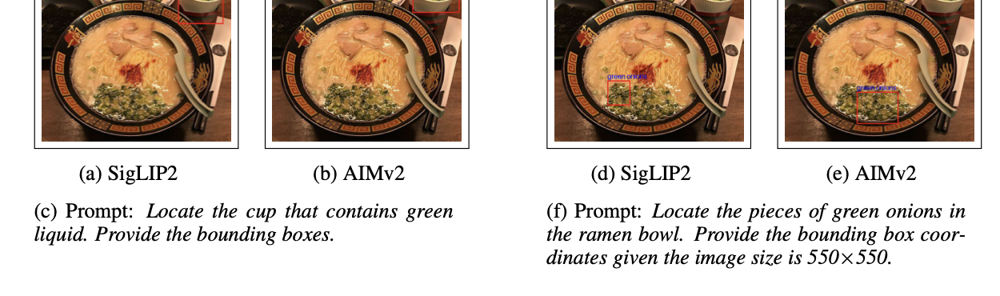
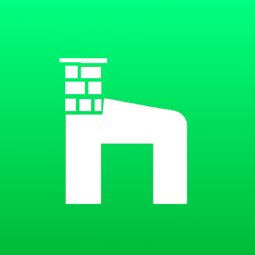
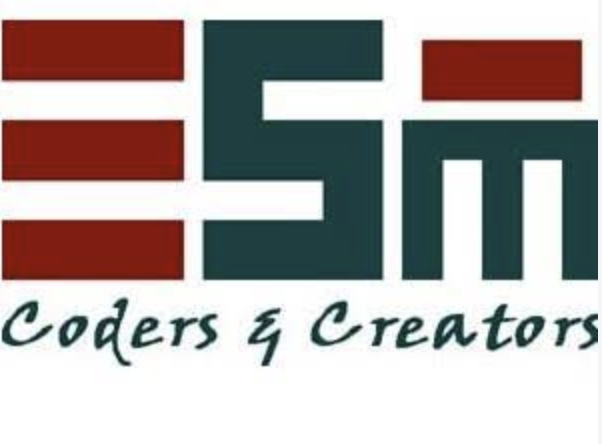

01
AerialSim
Learning to act in the physical world.
Built reinforcement learning environments for training and evaluating vision-language agents on autonomous drone missions during my Prime Intellect RL Residency.
Building things no one asked for.
I am an AI researcher working on visual autonomous systems, simulators and world models. My work spans large-scale computer vision systems, multimodal foundation models, and generative simulation. Explore my portfolio.
Before AI, there were other explorations. I performed on national television in 6th and 8th grade and ranked 1st among female students and 6th overall on the national high school merit list. While still in college in 2005, I built and sold a Bengali-language SMS application. I also became the first woman in my family tree to move abroad independently.
I live at the intersection of technology, creativity, and spirituality, and occasionally write prose-poems on Irrational Indulgence.
Selected work
01
Learning to act in the physical world.
Built reinforcement learning environments for training and evaluating vision-language agents on autonomous drone missions during my Prime Intellect RL Residency.
02
Machine perception at scale.
Built computer vision models deployed across 500,000+ surveillance cameras as a Staff AI Engineer at Cisco Meraki.

03
Exploring possible worlds.
Generating alternative versions of reality from real-world observations to train and evaluate autonomous AI systems.

04
Intelligence beyond language boundaries.
Led an 18-person global research team to build a multilingual multimodal foundation model, supported by Cohere Labs grants.


05
How machines understand space.
Research on visual encoder pretraining, 2D-RoPE, and spatial reasoning in vision-language models, supported by EleutherAI.

06
Entrepreneur in Residence.
Worked with Arlan Hamilton and Backstage Capital, exploring entrepreneurship from the investor's perspective.
07
Voice agents before Alexa
Co-founded Litehouse in 2014 to build voice-controlled home automation systems.

08
SMS in Bengali
Built a Bengali-language SMS application during college and sold it to a telecom provider.

Prose-poem
Prose-poem.
Read on SubstackFull-tuition fellowship to study deep learning.
First place for bimanual robotic manipulation.
First place for a generative AI interior design application.